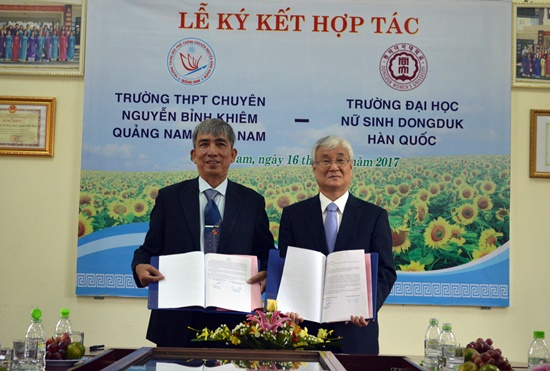
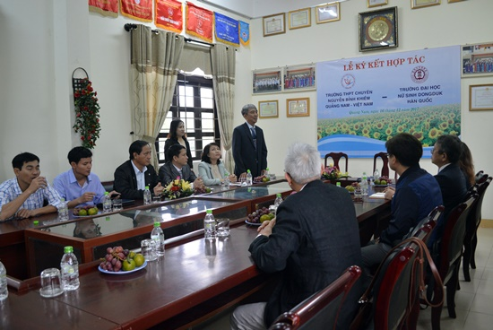

Trường THPT chuyên Nguyễn Bỉnh Khiêm và Trường Đại học Nữ sinh Dongduk ký kết hợp tác

Lần cập nhật cuối lúc Chủ nhật, 17 Tháng 12 2017 21:03 Viết bởi Administrator Chủ nhật, 17 Tháng 12 2017 20:58
(QNO) - Sáng nay 16.12, tại TP.Tam Kỳ, Trường THPT chuyên Nguyễn Bỉnh Khiêm và Trường Đại học Nữ sinh Dongduk (Hàn Quốc) tiến hành ký biên bản ghi nhớ hợp tác giữa hai bên về phát triển các chương trình liên kết đào tạo, hợp tác khoa học và nghiên cứu đào tạo.

Biên bản hợp tác giữa hai trường sẽ có thời hạn 5 năm. Ảnh: KHÁNH LINH
Theo đó, Trường Đại học Nữ sinh Dongduk sẽ hỗ trợ tài liệu, chuyên gia về các lĩnh vực khoa học chính xác và tự nhiên (Toán, Vật lý, Hóa học, Tin học…) cho giáo viên, cán bộ khoa học, cán bộ hành chính, chuyên viên kỹ thuật và học sinh Trường chuyên Nguyễn Bỉnh Khiêm với mục tiêu chuẩn bị và tiến hành các công trình liên kết nghiên cứu khoa học; gửi học sinh Trường chuyên Nguyễn Bỉnh Khiêm đến du học tại Trường Đại học Nữ sinh Dongduk; tổ chức tham quan, giao lưu học tập cho cán bộ và học sinh của hai trường. Đặc biệt, hàng năm Trường Đại học Nữ sinh Dongduk sẽ dành một số suất, chỉ tiêu học bổng cho học sinh của Trường chuyên Nguyễn Bỉnh Khiêm…

Toàn cảnh buổi ký kết biên bản ghi nhớ. Ảnh: KHÁNH LINH
Đổi lại, Trường THPT chuyên Nguyễn Bỉnh Khiêm có trách nhiệm quảng bá, giới thiệu thông tin về Trường Đại học Nữ sinh Dongduk, về cơ hội và điều kiện du học, về các chương trình đào tạo, chuyên ngành và hướng đào tạo, các chương trình giáo dục bổ sung cho học sinh mong muốn du học tự túc hoặc bằng nguồn học bổng tại Trường Đại học Nữ sinh Dongduk… Bản ghi nhớ này sẽ có hiệu lực trong 5 năm.
* Trước đó, ngày 15.12, đoàn công tác Trường Đại học Nữ sinh Dongduk đến thăm và làm việc với Trường Đại học Quảng Nam.
Sau khi nghe đại diện Trường Đại học Quảng Nam trình bày khái quát về cơ cấu tổ chức, quy mô các ngành đào tạo và kết quả hợp tác quốc tế của nhà trường trong thời gian qua, đặc biệt là cơ hội hợp tác trong thời gian đến, Hiệu trưởng Trường Đại học Nữ sinh Dongduk đã cảm ơn sự đón tiếp thân mật, trọng thị của nhà trường và trao đổi lại một số nội dung liên quan đến công tác đào tạo, đặc điểm của Trường Đại học Nữ sinh Dongduk. Được biết, Trường Đại học Nữ sinh Dongduk có bề dày hơn 100 năm, là trường chỉ dành riêng cho nữ sinh, với số lượng hàng năm lên đến 8.000 sinh viên. Các ngành mũi nhọn của trường tập trung đào tạo là thời trang, người mẫu và các ngành liên quan đến lĩnh vực nghệ thuật.
Theo Hiệu trưởng Trường Đại học Nữ sinh Dongduk, đoàn đến thăm và tìm hiểu về Trường Đại học Quảng Nam dịp này nhằm tìm cơ hội hợp tác trong đào tạo và nghiên cứu khoa học. Thời gian đến nhà trường có thể dành học bổng cho giảng viên và sinh viên của Trường Đại học Quảng Nam sang nghiên cứu, học tập tại Hàn Quốc.
KHÁNH LINH - XUÂN HOÀNG
- 12/09/2018 10:07 - Trường THPT chuyên Nguyễn Bỉnh Khiêm khai giảng nă…
- 24/08/2018 08:31 - Chỉ thị về nhiệm vụ chủ yếu năm học 2018 - 2019 củ…
- 08/06/2018 08:48 - Học với thiên nhiên hiện thực hóa các bài giảng lý…
- 21/02/2018 10:15 - Kế hoạch và Nội quy Hội trại Khát vọng Nguyễn Bỉnh…
- 29/12/2017 09:43 - Nghiên cứu sinh Phạm Thị Huyền – Phó Hiệu trưởng b…
- 02/12/2017 08:21 - KỶ NIỆM 35 NĂM NGÀY NHÀ GIÁO VIỆT NAM 20-11 THPT C…
- 24/11/2017 07:41 - Phát động tham gia hưởng ứng Cuộc thi Những tấm gư…
- 26/10/2017 00:00 - Đại hội Đại biểu Đoàn TNCS trường THPT Chuyên Nguy…
- 23/10/2017 00:00 - Sinh hoạt tuyên truyền giáo dục pháp luật về trật …
- 26/09/2017 08:30 - Đề cương tuyên truyền Đại hội Đoàn TNCS Hồ Chí Min…